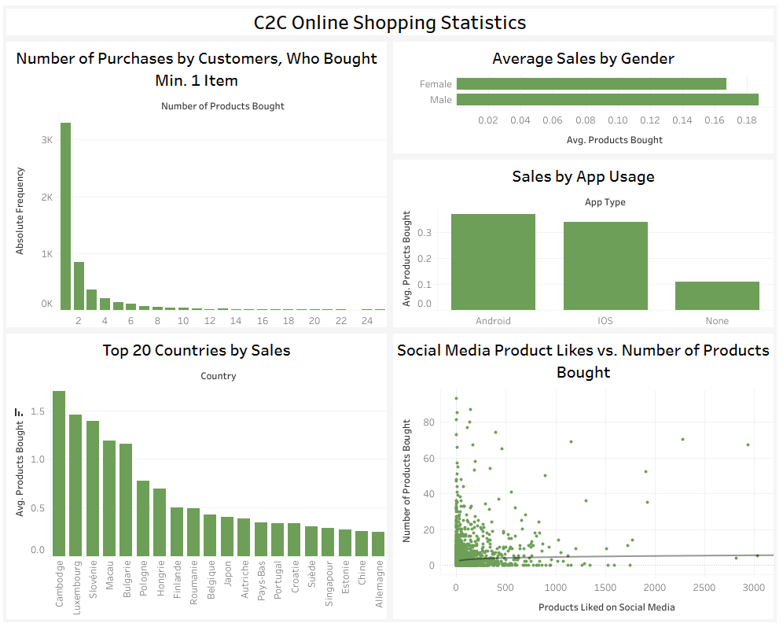
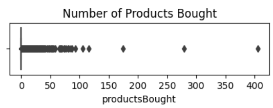
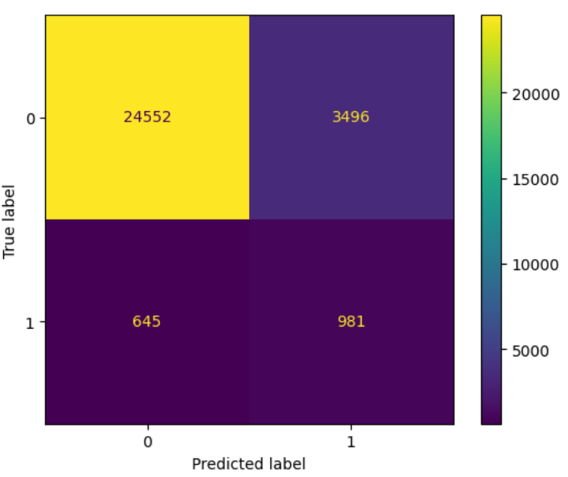
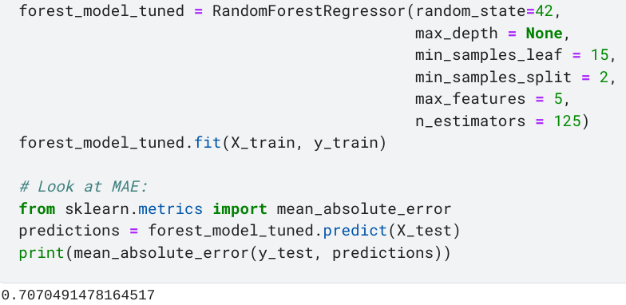

C2C Online Fashion Store
Predicting Customer Activity
Project Outline
Today, we look at a C2C E-commerce store and train two models. The data is available from Kaggle and contains close to 100.000 observations. In this shop, users can buy and sell fashion products. However, most registered users never make a single purchase. Thus, the store's management wants to predict (1) which users will make at least one purchase and which will not and (2) how many purchases users will make.Exploratory Data Analysis (EDA)
The dataset contains almost 100.000 observations, 24 columns, and no missing values. The prediction target is a variable that counts the number of products a user has purchased. For task (1), a binary variable is created indicating whether or not a user has ever made a purchase.I chose seven features for the two prediction tasks. These are the number of followers a user has, the number of people a user follows, the number of products a user has added to their wishlist, how long a user has been registered on the store, whether the user has installed the store's mobile application, the language a user has selected, and the user's gender. This Tableau Dashboard visualizes a number of relevant metrics:

Data Wrangling
Outliers
About 95% of users never make a purchase, so the prediction target is zero-inflated. Defining outliers as those values that lie above (Q3+1.5*IQR), this means that every customer who has made a purchase is an outlier. A boxplot visualizes the extreme right-skew of the data.
Clearly, this makes no sense, so I calculate outliers based on a subset of active customers (meaning those, who have made at least one purchase). This leaves us with 913 outliers, to which I assign the value of (Q3+1.5*IQR).Categorical Values
The gender and language variables are categorical. Gender contains two categories and language contains five. Both features are one-hot encoded to prepare them for modelling.Data Rebalancing
The first task is to predict which of the customers will make at least one purchase. As most customers (~95%) never buy anything, I need to rebalance my data. I use undersampling for hyperparameter tuning and an oversampled dataset for training the final model.Task 1: Classifying Active/Inactive Customers
The task is to train a model that can distinguish between users who make at least one purchase versus users who do not. I try four different model types: Naive Bayes, a Decision Tree Classifier, a Random Forest Classifier, and an XGBoost Classifier. For hyperparameter tuning I use GridSearchCV.The Random Forest outperforms all other models and is selected as the final model. Given the unbalanced prediction target, even the best model (both with and without data rebalancing) struggles to accurately classify users correctly. Recall (the proportion of actual positives that are correctly classified) is 60.3% and Accuracy (the proportion of data points that are correctly classified) is 86%. The confusion matrix shows that the model correctly classifies 918 true positives but contains over 3.000 false positives.

In a production environment, it would make sense to try and obtain additional data, if possible. It may be helpful, for example, to know whether a user has provided a payment method when signing up. Similarly, it may be advantageous to know a user's age group and city of residence, as residents in certain age groups and more/less wealthy areas may make more/fewer purchases. However, such considerations would also need to be carefully evaluated in terms of their ethical implications.Task 2: Using Regression to Predict Purchase Numbers
After classifying users who make purchases versus those, who do not, the next task is to predict how many purchases a user will make. For this, I only use the subset of users, who have made at least one purchase. Two models are tested: A Random Forest Regressor and an XGBoost Regressor. Both are tuned using GridSearchCV. Model accuracy is measured using the Mean Absolute Error. The Random Forest very slightly outperforms XGBoost with an MAE of 0.71 (the range of the prediction target is [1, 3.5] after adjusting outliers). This result is good but could be improved by using a wider array of hyperparameters (I only tuned five) or by including such information as I suggested for the classification task.
Conclusion
In summary, it is possible to predict the number of purchases an active customer will make using a Random Forest model. However, it is difficult to predict whether a customer will become active (=make one or more purchases) or remain inactive (=never make any purchases). In a business setting, I would work with the data engineering team to obtain additional features that may support our classification model. These could include payment information, age group, city of residence, etc. However, all of this information can be very personal, so ethical implications would need to be taken into account.The enire Jupyter Notebook is publicly accessible on Kaggle.